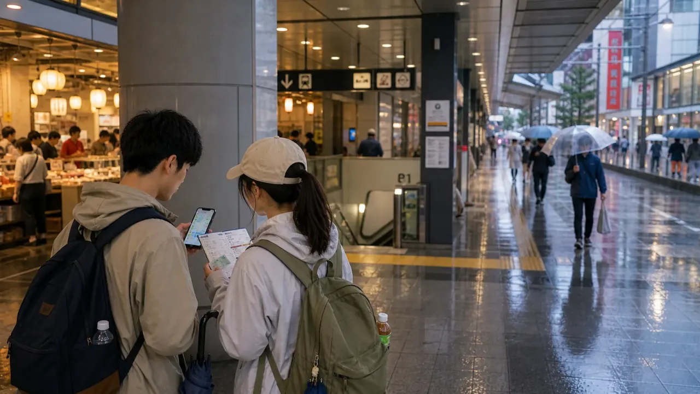
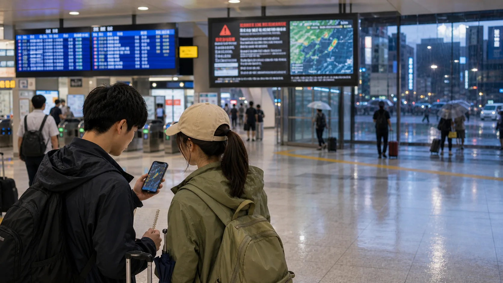
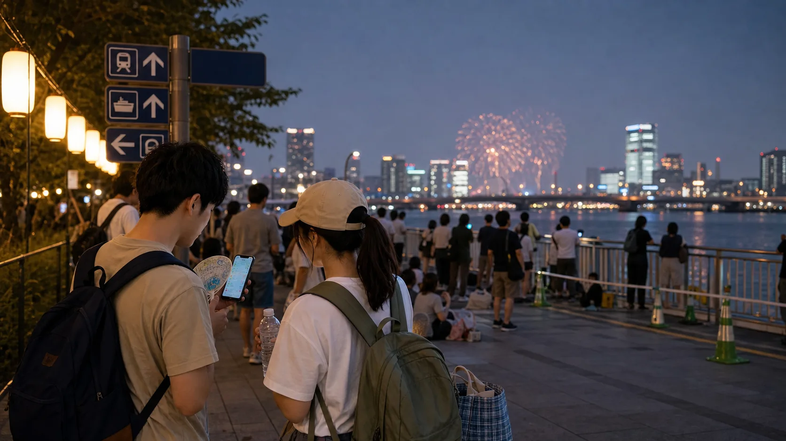
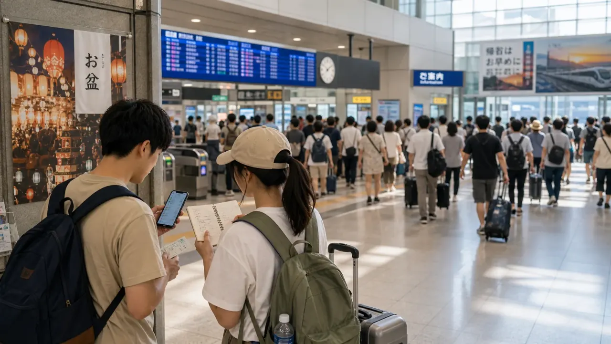
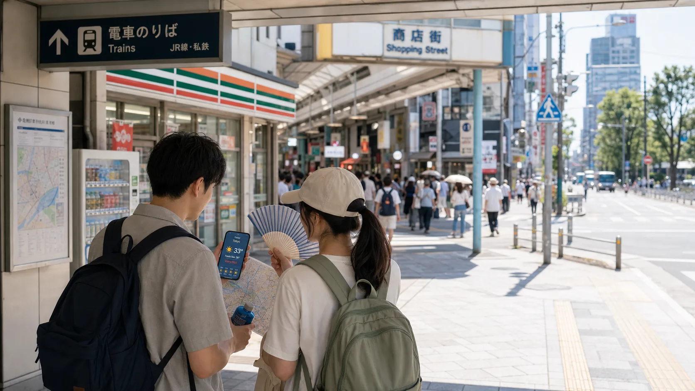
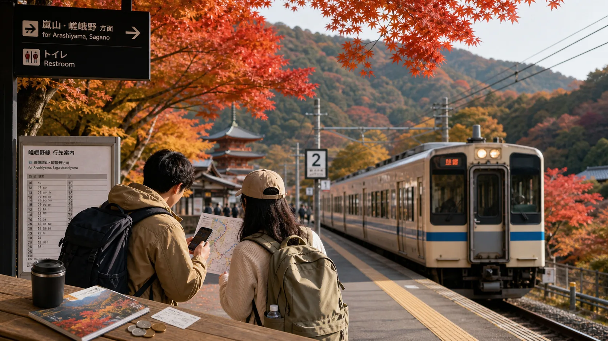
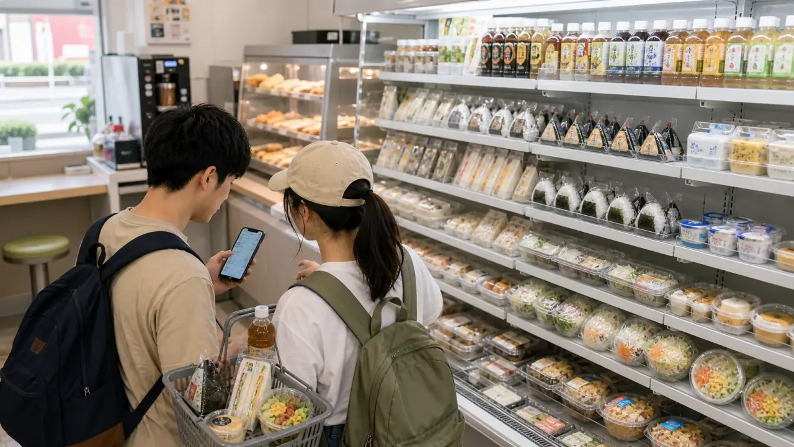
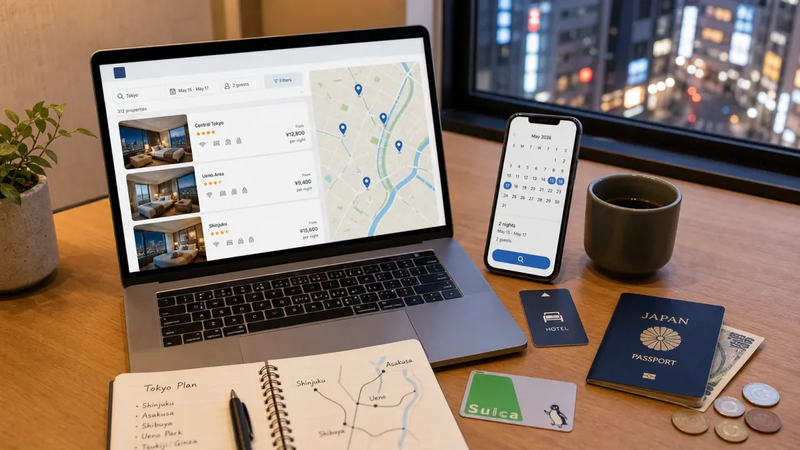
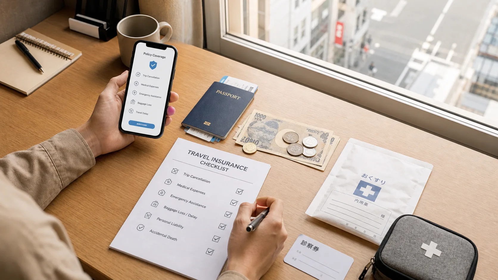

Hotel base matters most
Budget rooms often decide the total more than food. Compare station access before chasing the cheapest nightly rate.
- Planning range
- $45-160/night
- Biggest swing
- Season and station access

Japan costs, routes, and booking decisions
Use realistic cost ranges, route checks, rail pass math, eSIM choices, and hotel-area notes before you book.
Coverage map
Start with nationwide budget decisions, then choose the city guide, hotel base, airport transfer, or day trip that matches where you are going.
Choose your next step
Estimate lodging, food, transport, attractions, and buffer before you book.
02 I am planning my first Japan tripUse a booking order so flights, hotels, routes, internet, and insurance do not conflict.
03 I am worried about crowdsShift timing, city order, and day-trip choices around Japan's busiest travel bottlenecks.
04 I am close to buying thingsCompare internet, hotel areas, airport transfers, rail choices, insurance, and day trips.
Route remix
Pick the trip length and mood, then start from the matching route skeleton and guide links.
Pick a route, then copy it into your notes.
Tokyo, Kyoto, and Osaka with the fewest expensive detours.
Trip costs
Budget rooms often decide the total more than food. Compare station access before chasing the cheapest nightly rate.
JR Pass prices, airport rail, buses, and local fares change. Check the actual route before buying any pass.
Convenience stores, ramen, set meals, and casual chains keep daily costs stable while leaving room for one splurge.
Benchmarks use official JR Pass, airport access, visitor statistics, and transport sources. Treat them as planning ranges and verify current prices before booking.
Free tool
Estimate the on-ground cost for your Japan trip. Flights are excluded because they vary heavily by origin city.
Trip style quiz
Answer five quick questions and get a practical route type with the guide to read next.
Pick the answer closest to your current plan.
Mini game
Make five planning choices and see whether your first Japan trip stays efficient, comfortable, or expensive.
You land tired, with one suitcase, and your hotel is near Ueno.
Best for travelers who want the classic route with realistic hotel, food, and train costs.
Try 7-day classic remixNeighborhood base guide, local trains, cheap eats, free viewpoints, and one paid highlight.
Try 5-day Tokyo remixA calmer plan for couples, families, and first-time travelers who do not want to rush.
Open 10-day slow remixGuide shortcuts
Trending now

Tokyo rainy day Tokyo rainy day budget itineraryUse museums, food halls, underground routes, and covered streets when weather changes the plan.

Typhoon season Japan typhoon season travel guidePlan flights, trains, hotels, insurance, and route buffers before weather disrupts the trip.

Fireworks 2026 Japan fireworks budget guidePlan summer hanabi nights with realistic hotels, trains, food, weather, and crowd exits.

Obon 2026 Japan Obon crowd and budget guidePlan mid-August hotels, transport, luggage, heat, and route buffers before prices spike.

Summer 2026 Japan summer heat and crowd guideBuild early starts, indoor breaks, hotel location, and heat checks into the route.

Autumn 2026 Japan autumn foliage budget routePlan Tokyo, Kyoto, Osaka, Fuji, Nara, and Uji without chasing expensive peak dates.
 June 2026 trends
Japan travel trends June 2026
June 2026 trends
Japan travel trends June 2026
Visitor demand, Fuji rules, crowd pressure, and what to verify before booking.
 Travel trends
Is Japan too crowded in 2026?
Travel trends
Is Japan too crowded in 2026?
How to avoid the worst bottlenecks without overpaying.
 Mount Fuji
Mount Fuji day trip from Tokyo
Mount Fuji
Mount Fuji day trip from Tokyo
Train, bus, tour, timing, and when an overnight stay is worth it.
 Kansai day trips
Best day trips from Kyoto and Osaka
Kansai day trips
Best day trips from Kyoto and Osaka
Compare Nara, Uji, Kobe, and Himeji by base, time, budget pressure, and trip style.
 Nara day trip
Nara from Osaka or Kyoto
Nara day trip
Nara from Osaka or Kyoto
JR vs Kintetsu, Nara Park, Todai-ji, timing, food, and budget.
 Kobe day trip
Kobe from Osaka or Kyoto
Kobe day trip
Kobe from Osaka or Kyoto
JR vs Hankyu vs Hanshin, harbor views, Kitano, Motomachi, timing, and budget.
 Himeji day trip
Himeji Castle from Osaka or Kyoto
Himeji day trip
Himeji Castle from Osaka or Kyoto
Castle, Kokoen Garden, regular JR vs Shinkansen, timing, and budget.
Uji day trip
Uji from Kyoto or Osaka
Byodoin, matcha streets, Uji River, JR vs Keihan, half-day timing, and budget.
Budget decisions

Cheap food Japan convenience store food budget guideBuild cheap breakfasts, lunches, train meals, snacks, and backup dinners without overspending.
 Budget planning
Japan trip cost in 2026
Budget planning
Japan trip cost in 2026
Daily budget ranges, example trip totals, and the categories that matter most.
 Tourist taxes
Japan tourist taxes in 2026
Tourist taxes
Japan tourist taxes in 2026
Departure tax, accommodation taxes, onsen fees, and hidden checkout costs.
 Transport savings
JR Pass alternatives in 2026
Transport savings
JR Pass alternatives in 2026
When to skip the nationwide pass and use smarter transport options.
 Airport transfers
Japan airport transfer guide
Airport transfers
Japan airport transfer guide
How to choose between trains, airport buses, taxis, private transfers, and luggage delivery.
 Narita Airport
Narita Airport to Tokyo
Narita Airport
Narita Airport to Tokyo
Skyliner, Narita Express, bus, taxi, and hotel-area fit.
 Haneda Airport
Haneda Airport to Tokyo
Haneda Airport
Haneda Airport to Tokyo
Monorail, Keikyu, bus, taxi, late arrivals, and hotel bases.
 Kansai Airport
KIX to Osaka or Kyoto
Kansai Airport
KIX to Osaka or Kyoto
Choose between Namba, Umeda, Shin-Osaka, Kyoto, bus, rail, taxi, and transfer.
 Luggage
Japan luggage delivery and storage
Luggage
Japan luggage delivery and storage
When to send bags, use station lockers, or carry luggage yourself.
First trip essentials
 Tokyo city guide
Tokyo for budget travelers
Tokyo city guide
Tokyo for budget travelers
Main sightseeing zones, hotel bases, cheap food, airport access, and route planning.
 Kyoto city guide
Kyoto for budget travelers
Kyoto city guide
Kyoto for budget travelers
Sightseeing zones, hotel bases, crowd timing, airport access, and route planning.
 Kyoto route
Kyoto 2-day budget itinerary
Kyoto route
Kyoto 2-day budget itinerary
Higashiyama, Gion, Fushimi Inari, Arashiyama, hotel base, budget, and what to skip.
 Osaka city guide
Osaka for budget travelers
Osaka city guide
Osaka for budget travelers
Food zones, Namba vs Umeda, Osaka Castle, Kansai Airport access, and day trips.
 Osaka route
Osaka 2-day budget itinerary
Osaka route
Osaka 2-day budget itinerary
Namba, Dotonbori, Osaka Castle, Shinsekai, Umeda, Bay Area, food, and hotel base.
 Start here
First Japan trip checklist
Start here
First Japan trip checklist
The booking order for costs, hotels, airport transfers, rail, eSIM, and insurance.
 Tokyo route
Tokyo 5-day budget itinerary
Tokyo route
Tokyo 5-day budget itinerary
A first-time Tokyo route grouped by neighborhoods to reduce backtracking.
 Hotels
Japan hotel booking checklist
Hotels
Japan hotel booking checklist
Check station access, room size, taxes, luggage storage, cancellation, and transfer fit.

Hotels Japan hotel booking sites comparedCompare OTAs, hotel direct rates, map search, cancellation, taxes, and final price.
 Tokyo hotels
Tokyo hotel area comparison
Tokyo hotels
Tokyo hotel area comparison
Ueno, Asakusa, Shinjuku, Ginza, Tokyo Station, Ikebukuro, and Shinagawa.
 Hotels
Where to stay in Tokyo on a budget
Hotels
Where to stay in Tokyo on a budget
Ueno, Asakusa, Ikebukuro, Shinjuku, and Tokyo Station tradeoffs.
 Hotels
Where to stay in Kyoto on a budget
Hotels
Where to stay in Kyoto on a budget
Kyoto Station, Shijo-Kawaramachi, Gion, Nijo, and when Osaka works better.
 Hotels
Where to stay in Osaka on a budget
Hotels
Where to stay in Osaka on a budget
Namba, Umeda, Tennoji, Shin-Osaka, Osaka Bay, and when Osaka works as a Kyoto base.
Internet Best Japan eSIM for tourists in 2026Choose data amount, activation timing, hotspot rules, support, and when pocket WiFi is better.
 Internet
Japan eSIM vs pocket WiFi
Internet
Japan eSIM vs pocket WiFi
How to choose data for solo travel, couples, families, and laptop-heavy trips.

Insurance Best Japan travel insurance for tourists in 2026Compare medical coverage, cancellation, baggage, delays, emergency help, and exclusions.
 Insurance
Japan travel insurance checklist
Insurance
Japan travel insurance checklist
Medical coverage, delays, cancellation, translation help, and what to check.
Resources Planning resource hubOne place for internet, hotels, airport transfers, rail choices, insurance, and day-trip planning.
Planning tools